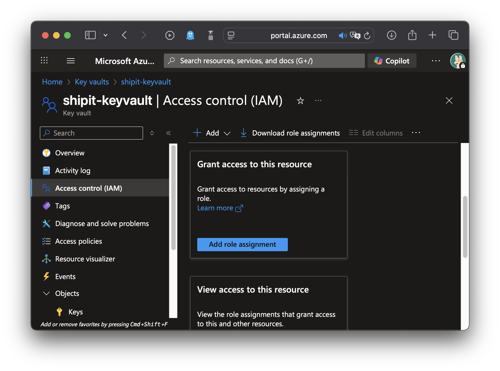
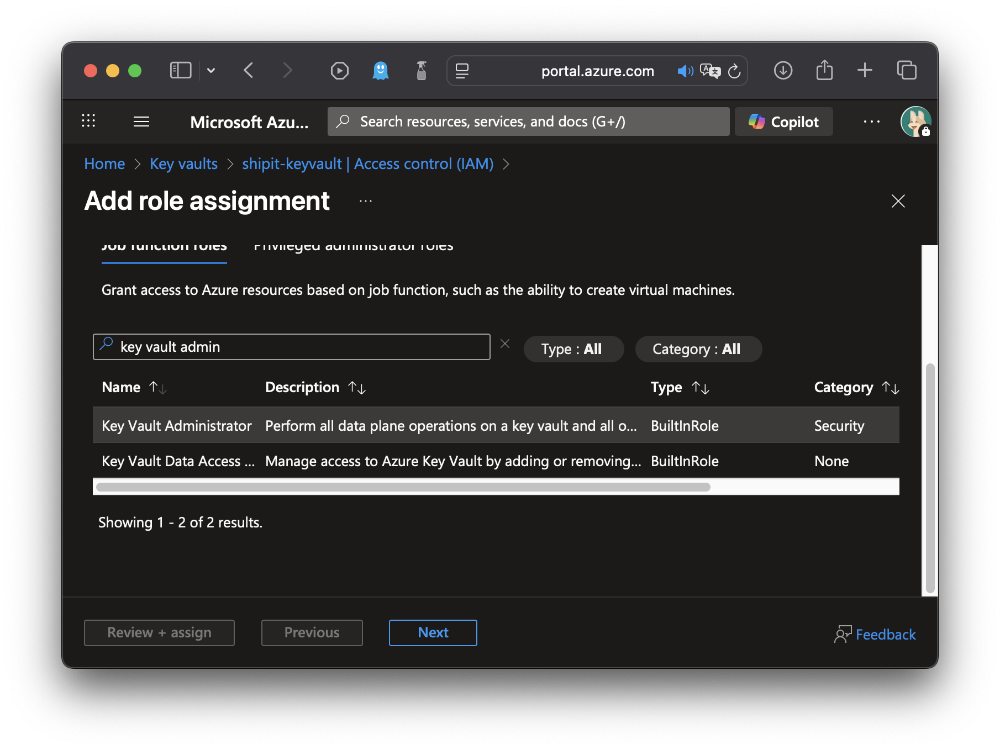
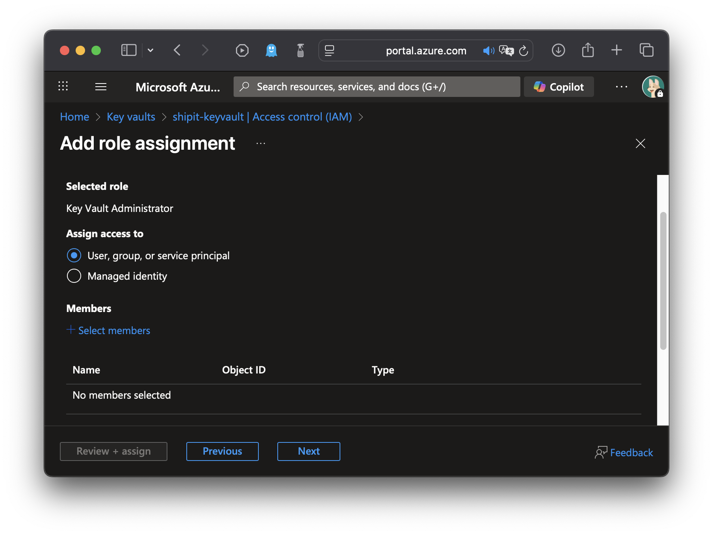
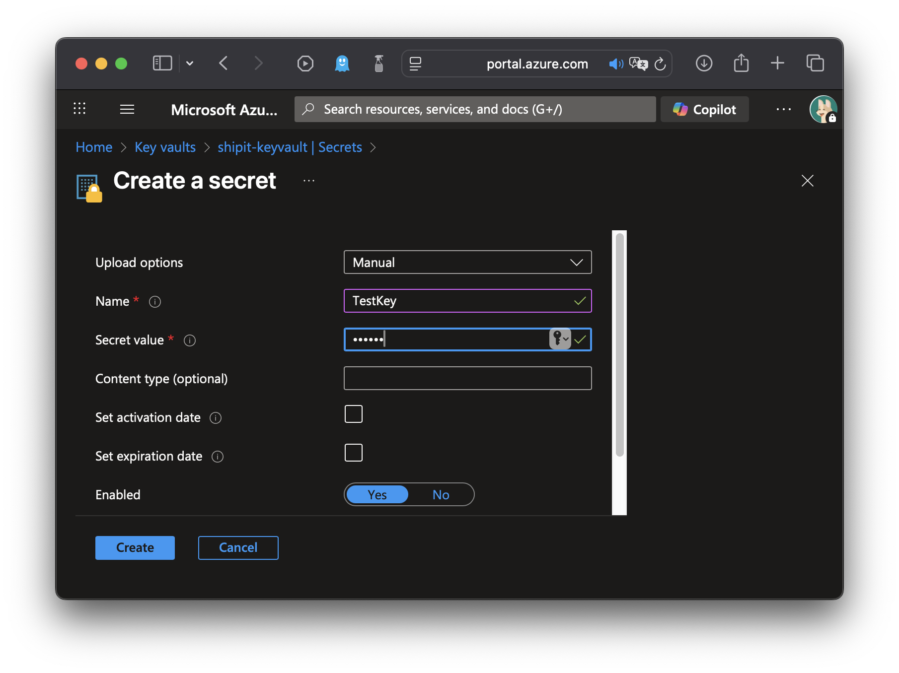
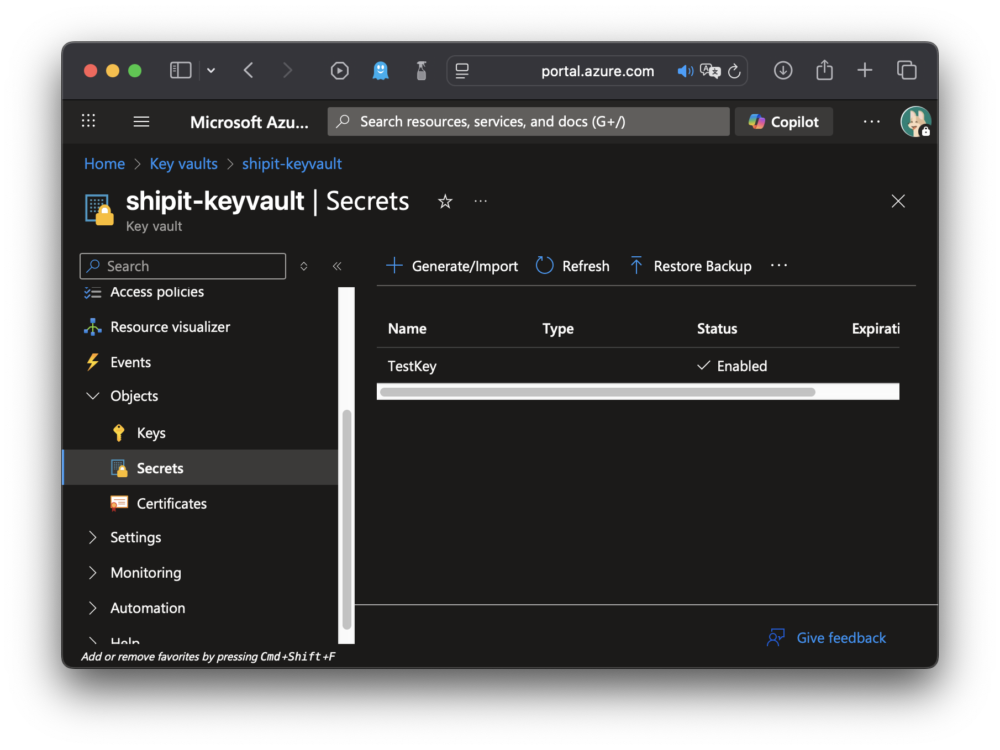
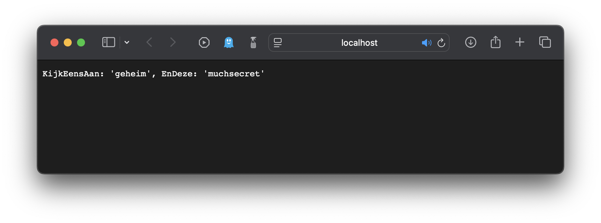

Secret Management
| Dit is een nieuwe sectie. Er is nog geen lesopname beschikbaar. |
Doel van deze les
-
Verschil maken tussen configuratie en secrets.
-
Belang van secret beheer inzien.
-
Praktische toepassing Azure KeyVault
Wanneer Secrets?
Gevoelige applicatieve configuratie, zoals connectionstrings of api keys, moet zorgvuldig behandeld worden. We gaan deze waarden niet hardcoden in C# bestanden.
Je kan configuratie kwijt in appsettings.json. Deze file wordt typisch in git bewaard, dus het is geen goede locatie voor gevoelige informatie.
Je kan varianten maken, zoals appsettings.Development.json die bedoeld zijn voor een specifieke omgeving en er voor opteren deze niet in git te bewaren. Wanneer je dit doet, toon je aan bewust te zijn van het risico, maar het is nog steeds niet de ideale oplossing.
De mogelijkheid bestaat om configuratie te klasseren als Secrets. Secrets zijn geheimen die niet zomaar prijsgegeven worden. Dit is de betere aanpak.
Lokaal
Lokaal heb je de mogelijkheid om secrets te definiëren die bij een project horen, zonder deze waarden in de directory structuur van je project te bewaren. Er bestaat dus geen risico dat je per ongeluk de waarden in git zou stoppen.
Dit laat zich gemakkelijk beheren met VS Code.
Je krijgt een json file voorgeschoteld om je secrets in te bewaren.
| Merk op (zie breadcrumb) dat deze file niet in je projectstructuur zit! |
De secrets file wordt verbonden aan het project via de .csproj file. VS Code zet de waarde juist. Je hoeft niets te doen.
<Project Sdk="Microsoft.NET.Sdk.Web">
<PropertyGroup>
<TargetFramework>net9.0</TargetFramework>
<Nullable>enable</Nullable>
<ImplicitUsings>enable</ImplicitUsings>
<UserSecretsId>4a42f147-c895-47a7-b452-469fc831c121</UserSecretsId> (1)
</PropertyGroup>
</Project>| 1 | Referentie naar secrets voor dit project. |
Om de secrets te gebruiken, hoef je niets speciaals te doen. De file wordt automatisch toegevoegd als een configuratiebron (environment vars, appsettings.*.json, …)
var builder = WebApplication.CreateBuilder(args);
var app = builder.Build();
app.MapGet("/", (IConfiguration c) =>
$"LeSecretKey: '{c["LeSecretKey"]}'"); (1)
app.Run();| 1 | Secret wordt uitgelezen |
Azure KeyVault
Lokaal secret management is belangrijk, maar met Azure wordt het nog veiliger: de secrets staan zelfs niet op je eigen computer.
Aanmaken
Maak een Key Vault aan in de Azure Portal.
Op dit moment ben je eigenaar van de Key Vault, maar kan je geen secrets beheren. De Role Based Access Control (RBAC) verhindert dit. Als eigenaar heb je wel de mogelijkheid om jezelf de nodige rechten te geven 🙃
Navigeer naar de Access Control (IAM) sectie en kies voor "Add Role Assignment".

Kies de gepaste rol.

Kies de ontvanger van de rol - jezelf dus.

| Je ziet dat de ontvanger van een rol niet alleen een persoon, maar ook een Managed Identity kan zijn. Een App Service kan een Managed Identity toegewezen krijgen. Via dat mechanisme zou een App Service secrets kunnen lezen uit de Key Vault. |
Maak een secret om je nieuw verworven rechten uit te proberen.

Indien het goed zit, verschijnt deze nu in het overzicht.

Uitlezen in C#
We maken een lege web api en voegen onderstaande nuget packages toe.
-
Azure.Extensions.AspNetCore.Configuration.Secrets -
Azure.Identity
using Azure.Extensions.AspNetCore.Configuration.Secrets;
using Azure.Identity;
var builder = WebApplication.CreateBuilder(args);
builder.Configuration.AddAzureKeyVault( (1)
new Uri("https://shipit-keyvault.vault.azure.net/"), (2)
new DefaultAzureCredential() (3)
);
var app = builder.Build();
app.MapGet("/", (IConfiguration c) => (4)
$"Hello HOGENT! Ik geef het geheim prijs: '{c["TestKey"]}'"); (5)
app.Run();| 1 | Azure Key Vault toevoegen als configuration provider. |
| 2 | Azure Key Vault url. Te vinden in Azure Portal. |
| 3 | Authenticeer bij de Key Vault gebruikmakende van de Azure Credential in scope. Lokaal zal dit standaard jouw eigen Azure account zijn. |
| 4 | Vraag globale app configuratie aan met DI. |
| 5 | Uitlezen Key-Value. |
IOptions
Jamaar, Stefan, ge verkoopt eerder IOptions en nu leest ge gelijk een boer uit IConfiguration.
Fair enough. We hebben gezien dat je met Microsoft.Extensions.Options een json hiërarchie uit appsettings.json kan laten parsen naar een object en dit vervolgens laten injecteren in, bijvoorbeeld, een repository.
Je kan dit ook doen met waarden uit een Key Vault.
public class DemoOptions
{
public string KijkEensAan { get; set; }
public string EnDeze { get; set; }
}Mocht je dit uit appsettings.json lezen, kan je dat daar als volgt voorstellen
{
...
"DemoOptions" : {
"KijkEensAan" : "waarde",
"EnDeze" : "ietsAnders"
}
}En als volgt uitlezen en gebruiken
// ...
builder.Services.Configure<DemoOptions>(
builder.Configuration.GetSection(
nameof(DemoOptions)
)
);
var app = builder.Build();
app.MapGet("/", (IOptions<DemoOptions> o) =>
$"KijkEensAan: '{o.Value.KijkEensAan}', EnDeze: '{o.Value.EnDeze}'");
//...Je kan hiërarchische configuratie in een json platslaan door : tussen de key niveau’s te zetten. Dat geeft:
{
...
"DemoOptions:KijkEensAan" : "waarde",
"DemoOptions:EnDeze" : "ietsAnders"
}Je kan dus alles als aparte key-values bewaren, bijvoorbeeld in Azure Key Vault. Simpel.
Azure Key Vault accepteert dus geen : in de Key. De standaardoplossing hiervoor, is de : te vervangen door --. Wat ons brengt tot
Gezien we steunen op de aanbevolen : → -- vertaalslag, hoeven we in de code niets aan te passen. Dit zal vanzelf werken.

Indien je wil afwijken van de -- logica, geef je aan builder.Configuration.AddAzureKeyVault(…) een eigen KeyVaultSecretManager mee met custom logica.
|
Deployen
Laat ons eens een klik-klak deploy doen gebruikmakende van de Azure Tools VS Code Extension.
Maak een nieuwe App aan.
Deploy naar de nieuwe App.
Verwacht output analoog aan onderstaande.
Bezoek de nieuwe App.
De App zal niet werken. Wanneer de App lokaal uitgevoerd werd, gebruikte deze impliciet jouw Azure account en bijhorende rechten om de KeyVault uit te lezen. Nu de App op Azure staat, heeft deze geen toegang meer tot jouw identiteit.
App Identity
We gaan deze App identiteit en rechten moeten geven. Key Vault deelt zijn geheimen niet met een sans-papiers.
Navigeer in de Azure Portal naar het Identity luik van de nieuwe App. Activeer een System Assigned Managed Identity.
Navigeer naar de Access Control sectie van de Key Vault en creëer een Role Assignment. Net zoals we eerder gedaan hebben voor onze eigen account. Kies Key Vault Secret User als rol.
Kies de Managed Identity van de App als ontvanger van de rol.
Herstart nu de App via de Azure Portal.
We zijn rond: we kunnen lokaal en op Azure secrets gebruiken, zonder dat er een kans bestaat dat we deze per ongeluk in Git stoppen.